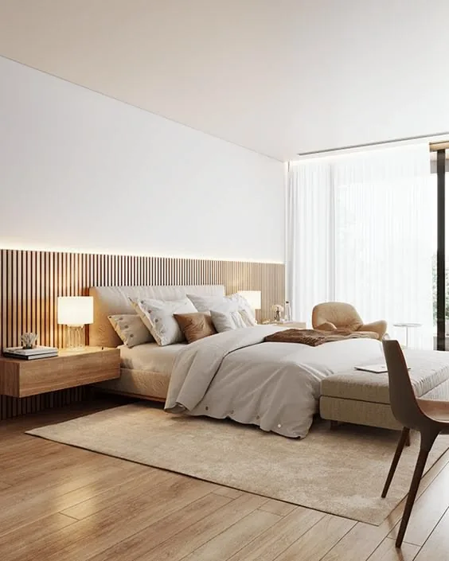

Lakástakarítás Győrben
A lakástakarítás ideális választás, ha szeretne rendezett, tiszta otthonba érkezni, de az idejét inkább a családjára, munkájára vagy pihenésre fordítaná. A feladatok körét az Ön igényeihez igazítjuk.
Alkalmi lakástakarítás
Egyszeri segítség olyan helyzetekre, amikor több feladat gyűlt össze, vendégek érkeznek, vagy csak szeretne egy alaposabb rendbetételt. A munka előtt egyeztetjük a helyiségeket és a kiemelt területeket.
Rendszeres lakástakarítás
Heti, kétheti vagy havi gyakorisággal is kérhető. A rendszeres szolgáltatás célja, hogy az alapvető rend és tisztaság folyamatosan fenntartható legyen.
Mit tartalmazhat a lakástakarítás?
- Porszívózás és felmosás
- Portalanítás
- Konyhai felületek, mosogató és külső készülékfelületek tisztítása
- Fürdőszoba, WC, mosdó és tükrök takarítása
- Szemetesek ürítése
- Igény szerint ágyazás és egyedi kérések
